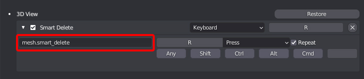

Setup
Installation
To install the tools inside Blender, follow these steps:
-
In Blender's top menu, go to Edit -> Preferences, choose the Add-ons section in the Preferences panel and click the Install button
-
In the browser window that appears, select the location of the addon and click Install
-
Now search for the Interactive Tools add-on in the list, and enable it using the checkbox
-
Once enabled, the tools can be found in the Interactive Tools pannel on the right side menu in Blender
Alternative
-
Go to C:\Users\ username \AppData\Roaming\Blender Foundation\Blender\ blender_version \scripts\addons and unpack the contents of the rar file
-
In Blender's top menu, go to Edit -> Preferences, choose the Add-ons section in the Preferences panel. In the browser window that appears, select the location of the addon and click Install
-
Now search for the Interactive Tools add-on in the list, and enable it using the checkbox
-
Once enabled, the tools can be found in the Interactive Tools pannel on the right side menu in Blender
Updating
-
Get the latest version from Github
-
In Blender's top menu, go to Edit -> Preferences, choose the Add-ons section in the Preferences panel and search for Interactive Tools
-
Click Remove to delete the current version of the addon
-
Install the plugin again using the new version
Alternative
-
Get the latest version from Github
-
Go to C:\Users\ username \AppData\Roaming\Blender Foundation\Blender\ blender_version \scripts\addons and unpacking the contents of the rar file, make sure to overwrite the files from the old version of the plugin
-
Restart Blender if it was open
Hotkey Setup
To get the most out of the tools you can add custom keymaps for the tools. You can learn more on how to set up custom Keymaps in Blenders Manual
Tool List
To make it easier to setup hotkeys for specific tools, here's a list of all the tools and their operator ID Names.
The operator ID Name dictates what tool is used when a key is pressed

Modes Cycling
- Selection Mode Cycle: mesh.selection_mode_cycle
- Transform Mode Cycle: mesh.transform_mode_cycle
- Transform Orientation Cycle: mesh.transform_orientation_cycle
Selection
- QS Vert: mesh.quick_selection_vert
- QS Edge: mesh.quick_selection_edge
- QS Face: mesh.quick_selection_face
- Smart Loop: mesh.smart_select_loop
- Smart Ring: mesh.smart_select_ring
Transform
- CS Move: mesh.cs_move
- CS Rotate: mesh.cs_rotate
- CS Scale: mesh.cs_scale
Tools
- Super Smart Create: mesh.super_smart_create
- Smart Delete: mesh.smart_delete
- Smart Extrude: mesh.smart_extrude
- Quick Origin: mesh.quick_pivot
- Edit Origin: mesh.simple_edit_pivot
- Quick Align: mesh.quick_align
- Quick Pipe: mesh.quick_pipe
- Quick Lattice: mesh.quick_lattice
- Rebase Cylinder: bpy.ops.mesh.rebase_cylinder
- Radial Symmetry: bpy.ops.mesh.radial_symmetry
- CS Slide: mesh.context_sensitive_slide
- CS Bevel: mesh.context_sensitive_bevel
- Quick HP Lp Namer: mesh.quick_hplp_namer
Pie Menus
- Smart Modify Pie: mesh.smart_modify
- Transform Options Pie: mesh.transform_options_pie
Toggles
- Modifiers On/Off: mesh.modifier_toggle
- Target Weld On/Off: mesh.target_weld_toggle
- Wireframe On/Off: mesh.wire_toggle
- Wire/Shaded bpy: mesh.wire_shaded_toggle
Uv Tools
- Rotate 90+: uv.rotate_90_pos
- Rotate 90-: uv.rotate_90_neg
- Seams From Sharps: uv.seams_from_islands
- Seams From Islands: uv.seams_from_sharps
- Uvs From Sharps: uv.uvs_from_sharps